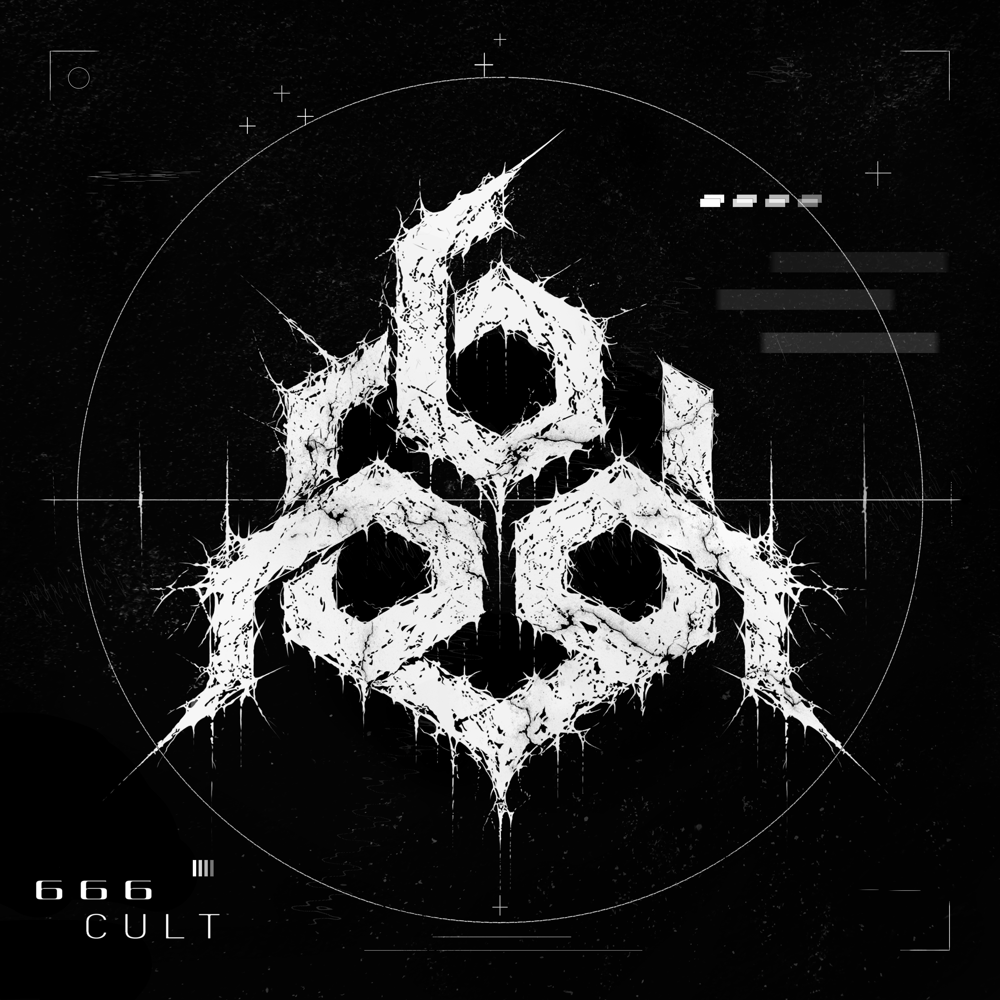

01
Хочу создавать, а не только пользоваться.
Мне интересна возможность самому придумывать и собирать цифровые вещи. Не зависеть от готовых решений, а понимать, как они устроены, и уметь сделать свою версию.

FROM ZERO / TO CODE (FZC)Я начал изучать программирование, чтобы однажды создавать собственные проекты: Discord-ботов, инструменты и сайты. Это мой путь от первых строк Python до чего-то настоящего.
Не обещание стать программистом за неделю. Просто цель, ради которой я готов разбираться в сложных вещах.
Мне интересна возможность самому придумывать и собирать цифровые вещи. Не зависеть от готовых решений, а понимать, как они устроены, и уметь сделать свою версию.
Создать гибкого Discord-бота с экономикой, магазином, инвентарём, уровнями и другими функциями. А дальше перейти к более крупным проектам и собственным сайтам.
Без гонки. Сначала понять основы, затем постепенно собирать из них реальные проекты.
Переменные, условия, циклы, функции, списки и логика программ.
Команды, экономика, магазин, инвентарь и удобная структура проекта.
HTML, CSS и JavaScript. Сайты и интерфейсы для собственных идей.
Коротко отвечаю на то, что обычно интересно узнать о моём обучении.
Я в начале пути. Изучаю Python постепенно, пишу небольшие программы и стараюсь самостоятельно разбираться в ошибках.
Python подходит для старта: на нём можно изучать основы программирования и в дальнейшем создавать Discord-ботов, автоматизацию и другие инструменты.
Точного срока нет. Я хочу двигаться в своём темпе, закреплять основы практикой и не перескакивать через непонятные темы.
Да. Эта страница задумана как небольшая точка отсчёта. По мере появления проектов и новых навыков её можно обновлять.
Этот сайт - первая небольшая часть пути. Дальше будет больше практики, ошибок, исправлений и работающих вещей.